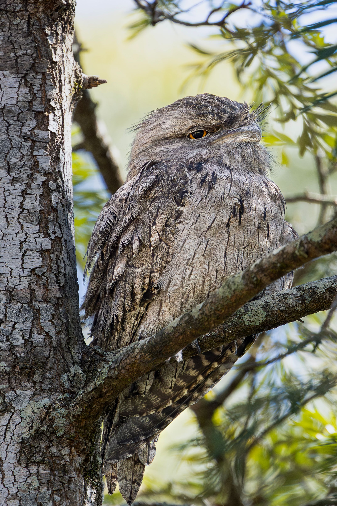

The Tawny Frogmouth is a distinctive Australian night bird that is often mistaken for an owl because of its large eyes, upright posture and nocturnal habits. It is actually more closely related to nightjars than to true owls. Its grey, brown and rufous mottled plumage provides excellent camouflage when it sits motionless against a tree branch during the day. Unlike owls, it has relatively weak feet and does not have the strongly curved talons typical of birds of prey. At night it becomes active and hunts insects, worms, snails and occasionally small vertebrates, usually by dropping onto prey from a perch. It occurs in a remarkably wide variety of Australian habitats, from woodland and forest to urban areas.